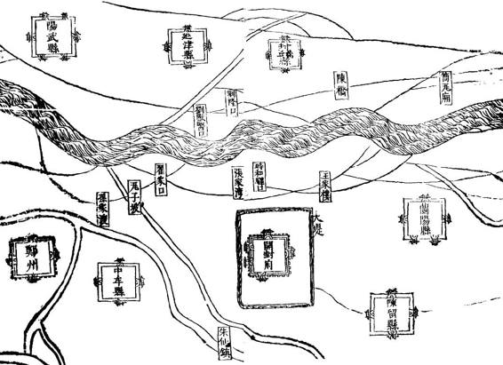
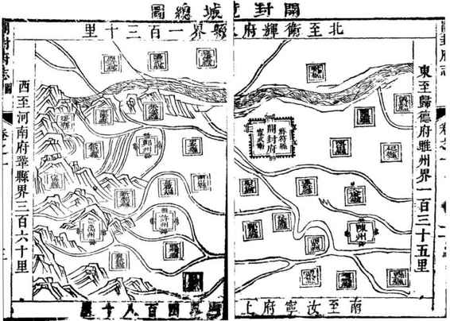
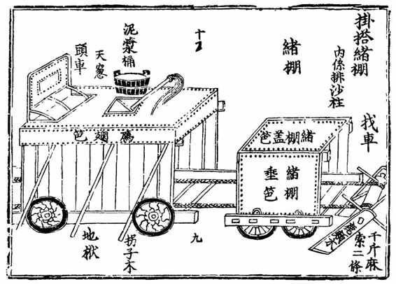
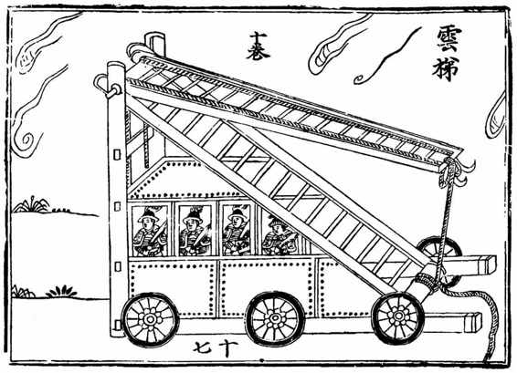

从军事角度说，当时开封是座空城。
之前，城内有两支部队。游击高谦部，先期随抚台李仙风往河北剿寇。另一支则因闻警洛阳，由副总兵陈永福率领驰援。不久，李仙风得知洛阳的消息，亦率高谦赶往那里。我们不知道政府军方面是否料到李自成会接着来打开封，总之，开封兵力倾巢而出，已经没有守军。

康熙三十四年《开封府志》卷之一“图考”选图四•开封周围
开封左近环境，首先要注意黄河，其次是大堤和朱仙镇两个地点。

康熙三十四年《开封府志》卷之一“图考”选图三•开封位置
显示开封与东南西北四方的关系。其中“西至河南府”，即洛阳。初围时，李自成大军就是从那里向开封扑来。
而李自成那边，却尽悉开封实为空城，为之兴奋不已。“二月初九日甲寅，贼乘汴兵尽出，疾走三昼夜，十二日丁巳，直抵汴梁。”[18]如此高强度的急行军，显然是意识到机会难得，于是一口气直扑过来。
二月十二日辰巳时，上午九十点钟的样子，闯军一支先头部队抵达城外，大约三百人，都是骑兵，显然负有侦察任务，因为他们都化了装，自称官军。但开封居民仿佛嗅出了什么，纷纷入城躲避，城门随即关闭。午未时（下午一时许），闯军大部队及李自成大营赶到。巡按高名衡下令，所有城门一律以沙袋堵死，开始固守。同时，主要官员迅速分工。祥符县（开封府治所在地）知县王燮带领衙役兵（相当于公安干警）登城守御，左布政使梁炳负责东门、右布政使蔡懋德负责曹门（东北门）、管河同知桑开第负责北门；由于闯军主攻方向在西门，此处由高名衡亲自坐镇，开封府推官黄澍与守道苏壮协守，另有周王府内侍曹坤与左长史李映春率王府卫士八百人，登西城之上抵抗。
分派粗当，各官遂分头履其职守。
其中，祥符知县王燮即刻邀集全城有声望及影响力的人士会议，榷定以下方案：马上组建民兵队伍；开封有八十四坊（八十四个街道社区），每坊立一社，每社兵额五十名；各家出兵原则是，全部由富人承担，越富则出兵越多，家庭资产一二千银者出兵一名（或两家合出一名），资产过万者出兵二至三名；这样，八十四社共得民兵四千余名；每社设长、副二人统之，全部八十四社再依五门分为五个总社，各置一人为总社领导。
组建民兵守城的构想及方案，既有效克服了开封无兵可用的困境，又解决了临时建军而无兵饷的难题（军饷按额分配给建制内军队，政府财政并无单独款项可供额外的军事消耗），同时，严格体现公平原则——受益愈多则分担愈多，由富人贡献所有人力物力，与普通百姓无涉。
借社兵组建一事，可略见知县王燮
或开封政界的高效与干练，与洛阳之涣散浊乱恰为鲜明对照。其于开封的久围不下，是很好的注脚。
另外一大不同，在福王、周王之间。明室宗亲，有远近、有大小、有穷富。福、周二王，其显赫及富有相当，而所借不同。福王靠的是所谓“神宗爱子”，与今上血缘最近，原本连紫禁城都可能让他来坐，虽德行不修，又哪里有人奈何得了他？周王不然，该王虽为朱元璋诸子一代最老亲王之一，身份尊贵，然而如果看看二百多年来第一批亲王怎样或削或废或得罪或破落，即知能够葆其福祜至今，殊为不易，故不可像福王那样有恃无恐，而须另有进退之道。这一点，当着开封被围之际，立刻表现了出来。
《大梁守城记》说，周王不但以八百王府卫士投入战斗（不必说，费用完全出自王府），且将大批银子直接搬上城头，立此为证：谁建功，立马给赏。这笔钱有数万两。他开出赏格：打死一个敌人赏五十两；能够退敌、解围者，赏十万两，外加保奏皇帝授升官职。
据《汴围湿襟录》，捐资初非周王主动，“知县王燮巡视兵情懈怠，单骑驰入周府，启王云：‘城破旦夕，王多积藏，万一失守，恐非王有，乘此人心未危，兵民可鼓，重赏犒之，或可救急！’王随发饷金数万，遍赏合城，敌忾大振，城遂可保。”[19]
虽出王燮之劝，周王至少能够纳其言。而且以上还是初围时情形，最后，李自成三围开封过程中，周王总共支出一百二十余万两银子[20]，或作为赏金、或作为给守兵购粮之用。另外，他还捐掉了自己当年的“岁禄”——我们正好知道他一年“岁禄”是多少，《弇山堂别集》卷六十七“亲王禄赐考、各府禄米、诸王公主岁供之数”载：“周王岁支本色禄米二万石”。[21]二万石，姑且不依围困中开封离谱的粮价算，即按平常的米价，崇祯十六年每石值银三点三两（此为北京米价，至于别地，崇祯初即可高达每石值银四两）[22]，折成银子又至少值六万两。
我们当然又想起朱常洵如同割了心头肉一般，拿出的那三千两慰劳金。
政府方面同样立有赏格：出城斩敌一级者可得银五十两，射杀一人赏三十两，措施有力，调配得当，官吏有为，周王表现也不让人失望。于是，开封士气便与洛阳判然有别。群众抵抗积极性高涨，除了组建起来的社兵，还有不少百姓自发参加守城战，“百姓挈弓矢刀槊登城者，纷纷恐后”。

《武经总要》选图六•工兵器械
当系挖“ 地道” 部队之装备。闯军在开封城墙下挖过许多大洞，不知可曾用到。

《武经总要》选图三•大型云梯
云梯，登城之具，种类颇多，这是比较大型的。两段云梯之间有轴，以绳缆操纵，即升高一倍。下部有类同巴士一般的车厢，将登城士兵安全运抵城下。
闯军首选攻城方式，是挖墙脚。在矢石掩护下，驱赶乡民接近城脚，然后挖洞。其作用，一是想打通城墙作为入口，二是可以藏匿兵员以备发动统一攀城行动，三还可以填炸药通过爆破毁城。而进展颇为顺利，头一天就在西门一带墙体挖出六个大洞，威胁极大。起初，城上对此束手无策，因为敌人深藏洞中，城上无论射箭、火攻皆不能及。十三日，一个叫张坚的人，发明了破解之策，称“悬楼式”，以巨木制成栅格式大吊楼，宽度跨五垛或三垛，其实就是可探出城外、可升降之活动掩体，每楼容十人，从里面发矢、投石、扔火罐，攻击洞内之敌。黄澍采纳了张坚发明，下令立刻赶制五十座。“悬楼式”果然奏效，闯军行动严重受阻，死伤甚众，大怒，十四日一整天，万箭齐发，以阻止“悬楼式”探于墙外，“箭插城垣如猬”。
然而，洞中所存之敌却未停止工作，昼夜挖掘，对此，“悬楼式”也无能为力，如不设法制止，城危旦夕。王燮遂向高名衡献计，照着敌人打洞位置，自城上下挖，将其凿穿。大家觉得冒险，害怕这么做弄不好反而帮敌人打通城墙，王燮却说古有成功之例，于是选了一处来试。开封城墙高约十一米，相当于三层楼房。打了一整天，终于打通一洞，井口粗细。下面闯军惊慌失措，“哄然遁出”，守军则将火药从洞口抛下，“贼皆不敢入洞”。然后，“各口效之，皆得固守”。
十五日，围城第四天，闯军换了攻城术，改用云梯强行登城。云梯多达百余座，有大有小，最大的一座由四十八人共抬而至。对城上来说，比之于挖墙脚，云梯较易对付。距城较远，以大炮击之；迫近，则用火攻。有一种火罐叫“万人敌”，可以理解为古时的大型燃烧弹，威力不小。这样，闯军云梯纵队无一得手，不死炮下即葬火中。
尽管如此，闯军并无退志。城内分析，或许敌人认准开封内虚，所以不肯轻罢。于是布疑兵之阵，将竹厂数万竹竿，悉数买下发给百姓，每人每天付酬五分银子，让他们高举竹竿，登城游行，呼喊口号，誓师“发兵出战”。据说，闯军果然有点摸不着头脑，将大营后移，而“攻危稍缓”。
十六日，迎来转机。救洛在外的副总兵陈永福，闻知闯军攻汴，兼程回援。他手下兵将，都是开封本地人，“闻贼寇城，顾家心急”，故能一鼓作气赶回，夜半时突袭闯营，斩敌若干，自损二将及兵士数百，撕开一条口子，抵于城下。高名衡犹恐有诈，命陈永福子城楼认父，辨得确实，才开门放入。至此，开封度过完全由百姓自守的四天，而重新拥有正规军，“合城欢噪，人人鼓勇，民心大定”。
正规军回归，底气果不同。十七日闯军复攻，薄近城池时，紧闭多日的城门居然打开了——陈永福率部出城迎战。双方相互靠近，到海濠边上，各自止步。闯军退却，或出于诱敌或对城内大胆略感意外。陈永福则不中其计，也勒住马头，从容回城。
消息惊动了李自成，他要亲自一探虚实，化装成普通士兵的样子，杂于众中，至城下窥视。城上照例以箭射之，其中一箭，“中左目下，深入二寸许，抱头惊拥而去。始知为闯贼也。”意外获此重大战果。从此，李自成就成了“独眼龙”。这一特征，过去的当代小说、连环画、戏剧之类叙述，是回避的。我自幼脑中的李自成形象，并无眇一目之印象。但作为事实，1641年起李自成确只剩下一只眼，那正是开封之围给他的烙印。
二月十八日黎明，闯军前锋部队掉转方向，在西边“逡巡终日”，傍晚，终于全军撤离。闯军的动摇，除了陈永福回归和李自成中箭，还因为传来消息，左良玉大军将至，保定的官军也即将渡河。当时，左军名头还很有威慑力；一年后，打完朱仙镇战役，左良玉神话才告解构。
闯军自十二日先头部队现身，至十八日西去，前后六天半，此即开封三围之初围。几乎没有驻军的省城开封，通过发动民众，顶住和化解各种危机，令刚刚取得洛阳大捷、信心爆棚的闯军，空徒往返。不宁唯是，其领袖竟至不能全身而退。
二月十九日，脱险后的开封，开始收拾烂摊子。王燮督众修葺城垣，夜以继日，仅用十天把所有的挖洞及其他破损修好。三月初一，进一步备战，各官募兵选将，添设营伍。高名衡添设了清真营，“皆募回回充之，称劲旅。”按：开封为回民聚居地，当时清真寺就多达十余处，大多是元初随蒙古远征军来此。此外，还有守道苏壮所设“道标营”。王燮创建的八十四社社兵，当然也并未解散，“无事则团练习艺，有事则登陴守御”。
大家都有预感：李自成还会再来。